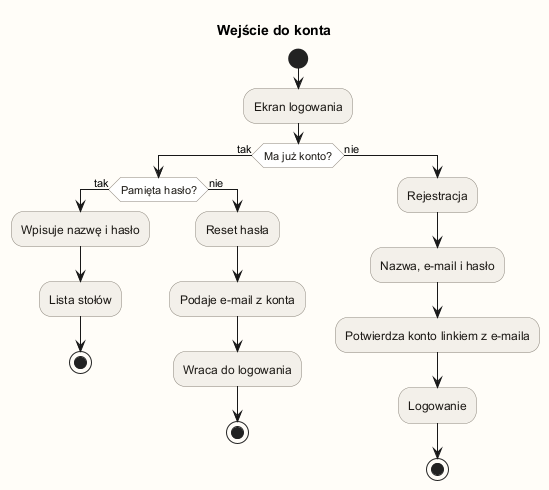
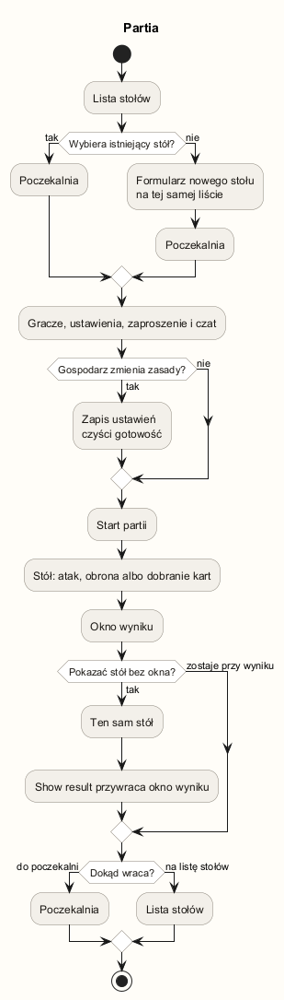
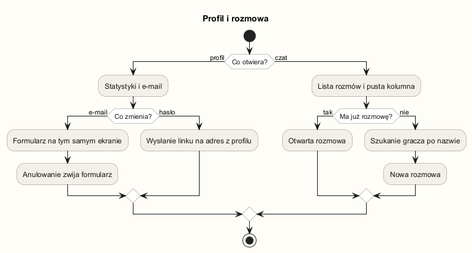
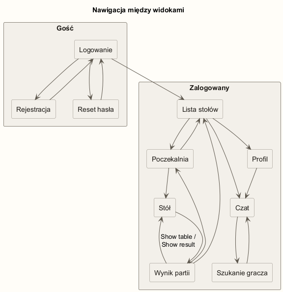

Komunikacja człowiek-komputer — specyfikacja interfejsu
Fools Arena
Aplikacja webowa do gry karcianej przy wspólnym stole. Ten dokument opisuje temat, przepływy, nawigację, szkielety i styl. Wizualny projekt interaktywny jest w Figmie: Fools Arena.
1. Opis tematu
Fools Arena to stół do gry karcianej dla kilku osób w przeglądarce. Gracz zakłada konto, wchodzi do poczekalni, siada przy stole albo zakłada własny, rozgrywa partię i może napisać do innych graczy.
Użytkownik zna zasady gry na tyle, żeby dobrać stół i wykonać ruch. Interfejs nie uczy zasad od zera długim tekstem na każdym ekranie. Krótka podpowiedź jest tylko przy ręce, w trakcie partii.
Aplikacja jest webowa. Działa w aktualnej przeglądarce na komputerze i na telefonie. Nie jest osobną aplikacją ze sklepu.
| Urządzenie | Minimalny obszar | Co musi być czytelne |
|---|---|---|
| Komputer | 1280 × 720 | Pełna nawigacja w nagłówku, stół i ręka obok siebie w pionie, czat w dwóch kolumnach. |
| Telefon | 390 × 852 | Te same zadania bez poziomego przewijania. Na stole nagłówek zwija się do Menu, a przyciski partii są w jednym rzędzie. |
Poniżej 390 px szerokości układ nie jest projektowany. Między 390 a 1280 px obowiązuje układ telefonu do 899 px i układ komputera od 900 px.
2. Przepływy użytkowników
Wejście do konta

Partia

Profil i rozmowa

3. Nawigacja
Stała nawigacja jest w nagłówku. Gość widzi Login i Register. Zalogowany gracz widzi Games, Chat i Profile. Na telefonie, na stole, te trzy cele chowają się pod Menu, żeby został rząd przycisków partii.

Formularz nowego stołu, ustawienia stołu, zmiana e-maila i zmiana hasła nie są osobnymi stronami. To stan tego samego ekranu. W prototypie są osobnymi kadrami tylko po to, żeby dało się w nie kliknąć.
4. Makiety szkieletowe
Szkielety są w Figmie, na stronie Wireframes. To kopie ekranów komputera: ten sam układ, te same napisy, bez koloru, cieni i rysunku kart. Szare pola pokazują, gdzie leżą bloki.
Są tam logowanie, rejestracja, reset hasła, lista stołów, formularz nowego stołu, poczekalnia, stół w trakcie gry, koniec partii, profil oraz czat z otwartą rozmową.
5. Style guide
Stół jest ciemny, a akcentem jest złoto kart i zielone sukno. Tekst główny jest jasny. Złoto nie służy do długich akapitów. Na czacie główny przycisk jest niebieski, żeby odróżnić rozmowę od partii.
Tło #0f1419
Panel #1a2332
Przycisk drugi #243044
Tekst #e8eaed
Tekst drugoplanowy #9aa0a6
Akcja główna, złoto
Sukno stołu
Główny przycisk czatu #2a6280
Błąd #e57373
Powodzenie #81c784
| Element | Zasada |
|---|---|
| Font | Segoe UI, z zapasem system-ui. W Figmie Inter, bo Segoe UI nie jest dostępny. Rozmiar tytułu ekranu 28 px, tekst 15–16 px, podpis 13 px. |
| Odstęp i róg | Panel: róg 12 px, pole i przycisk: róg 8 px. Odstęp między polami formularza 16 px. |
| Przycisk główny | Złoty gradient, ciemny tekst. Na czacie niebieski #2a6280 i jasny tekst. Na stole: niebieski powrót, złote wyjście, czerwone poddanie. |
| Pole | Tło #0f1419, obrys #9aa3b2, wysokość co najmniej 44 px. Błąd: obrys #ff8a80 i jasny tekst komunikatu. |
| Ikony | Obrys, bez wypełnienia, obok napisu. Sam symbol bez napisu tylko przy oku hasła i znaku menu. |
| Karty | Koszulka czerwona, figura jasna. Ruch do wykonania ma obrys. Awatar gracza przy stole to koło z inicjałami, nie zdjęcie obowiązkowe. |
6. Projekt interaktywny
Ekrany i przejścia są w pliku Figma „Fools Arena”. Kadry komputera mają w nazwie 1280, kadry telefonu 390. Pokaz uruchamia się z zaznaczonego kadru, nie z całego pliku.
Klikalne są między innymi: logowanie i reset, lista stołów oraz założenie stołu, start partii, poddanie, pokaz stołu po końcu, zmiana e-maila i hasła, lista czatów i nowa rozmowa, oraz Games, Chat i Profile.
Poza zakresem tego interfejsu: regulamin prawny, płatności, ranking sezonowy i osobna aplikacja na system telefonu.